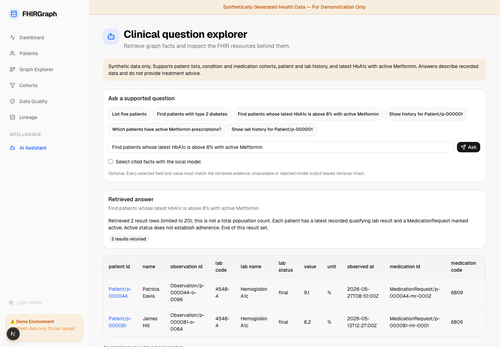

Why a graph?
FHIR already records relationships. Traversing those references makes patient, observation, encounter and prescription associations explicit and inspectable.
PERSONAL PROJECT · SYNTHETIC HEALTHCARE DATA
A FHIR R4 data pipeline, a reference graph, and grounded retrieval. Every answer leads back to an exact resource, a recorded field, and a confirmed ingestion trail.
This page presents verified project evidence. The interactive app runs locally with Docker. All patient records are fictional.
01 / FOLLOW THE EVIDENCE
The demo asks: “Find patients whose latest HbA1c is above 8% with active Metformin.” The system reports recorded facts. It does not recommend treatment.
02 / THE RUNNING APPLICATION
The local application includes patient search, a graph explorer, quality reports, question results, original FHIR JSON and resource-level provenance.
Read the engineering case study ↗
Recorded walkthrough of the local app. Retrieval, source inspection, provenance, history and abstention.
03 / HOW IT WORKS
Seeded mock FHIR, pinned official R4 structural schema, reference checks and eight data-quality rules.
HAPI retains FHIR JSON. Neo4j stores flattened fields and resolved reference edges. PostgreSQL records quality and stage-confirmed provenance.
Complete supported questions compile into fixed parameterized queries. Result pages carry resource IDs, exact paths and values. Independent evaluation checks those citations against live FHIR.
Optional local Ollama selects a few cited facts. Exact claim validation precedes application-rendered wording; invalid output preserves retrieval.
FHIR already records relationships. Traversing those references makes patient, observation, encounter and prescription associations explicit and inspectable.
Six evaluated query intents provide predictable semantics, limits and pagination. Unsupported filters and medical advice produce explicit abstention.
A flattened graph is useful for retrieval, but it cannot replace a source record. Exact source inspection and separate artifact hashes make the distinction visible.
04 / MEASURED, NOT ASSUMED
Independent raw-FHIR expectations check complete page traversal, returned values and live sources. Store reconciliation checks exact graph IDs and edges.
Measured results load from the verified evidence report.
Single-machine measurements describe this demo workload. They are not production capacity or clinical validation claims.
05 / PROJECT BOUNDARIES
Structural validation covers the pinned schema and labeled JSON shape checks. Full profile, FHIRPath invariant and terminology conformance is outside this project.
Checkpoint recovery assumes the persistent store is unchanged. Store replacement or drift requires explicit idempotent replay and reconciliation. Provenance hashes describe canonical artifact JSON before server-managed metadata.
This is a portfolio project using mock data, recorded facts and a bounded query catalog. It does not provide diagnosis, treatment advice, clinical decision support or unrestricted semantic search.
EXPLORE THE IMPLEMENTATION
Docker Compose starts the stores and application. A seeded pipeline produces the data, audit records and evaluation report.